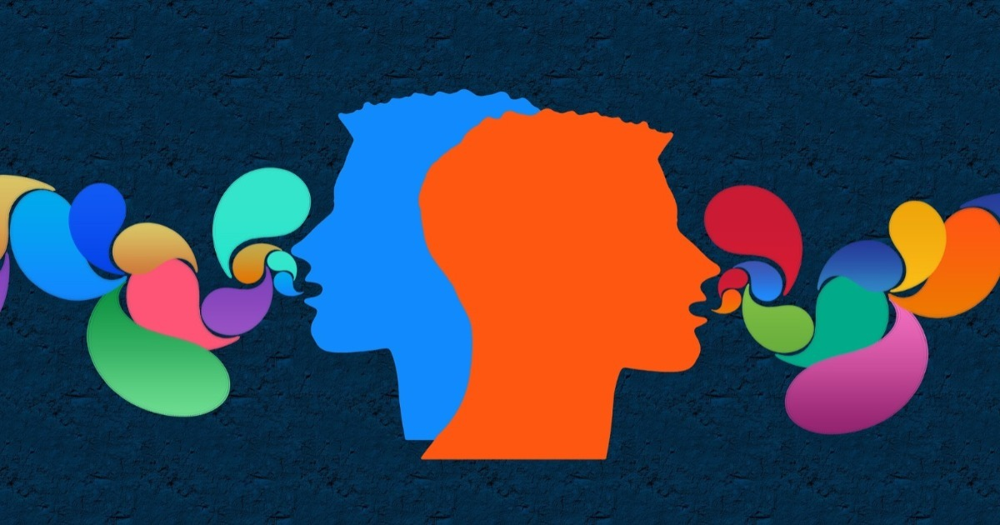
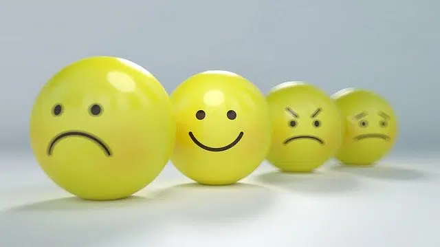
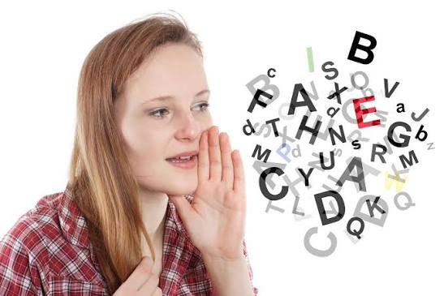

Emisor
Persona que produce y envía el mensaje.
Aprender a comunicar
Definiciones, características, tipos y ejemplos.

EmisorMensajeReceptorLa comunicación es el proceso mediante el cual una persona, grupo o institución transmite información, ideas, sentimientos, opiniones o conocimientos a otra persona o grupo, utilizando un código que pueda ser comprendido por los participantes.
Está presente en actividades como estudiar, trabajar, conversar, enseñar, negociar, informar y expresar sentimientos.
Persona que produce y envía el mensaje.
Persona que recibe e interpreta el mensaje.
Información que se desea transmitir.
Sistema de signos utilizado para elaborar el mensaje, por ejemplo, el español.
Medio por el que se transmite el mensaje, como la voz, papel, teléfono o internet.
Situación en la que ocurre la comunicación.
Realidad, objeto, situación o tema al que se refiere el mensaje.
Respuesta que proporciona el receptor al emisor.
Elemento que dificulta o distorsiona la comunicación.
Una profesora explica un tema a sus estudiantes. La profesora es el emisor; los estudiantes, los receptores; la explicación, el mensaje; el español, el código; la voz y la pizarra, el canal; el aula, el contexto; y las preguntas de los estudiantes constituyen retroalimentación.
La expresión es la manifestación de pensamientos, sentimientos, emociones, ideas, necesidades o experiencias mediante determinados recursos.
Palabras habladas.
Ejemplo: una exposición.Signos escritos.
Ejemplo: un ensayo.Movimientos y posturas.
Ejemplo: asentir con la cabeza.Movimientos del rostro.
Ejemplo: sonreír.Recursos artísticos.
Ejemplo: una pintura.La expresión se concentra en exteriorizar pensamientos, sentimientos o ideas, mientras que la comunicación implica intercambio y comprensión de mensajes.

El lenguaje es la capacidad humana que permite comunicarse y representar pensamientos, ideas, sentimientos y experiencias mediante sistemas de signos. No se limita al habla; también puede manifestarse mediante escritura, gestos, símbolos y otros sistemas.
“Mañana tenemos un examen de Lengua” utiliza el lenguaje para transmitir información sobre una actividad futura.

Las funciones del lenguaje representan las diferentes finalidades que puede tener un mensaje. La clasificación de Roman Jakobson distingue seis funciones.
Informa sobre hechos, objetos, situaciones o acontecimientos.
“La Universidad Técnica de Ambato está ubicada en Ecuador.”Manifiesta sentimientos, emociones, opiniones o estados de ánimo del emisor.
“Estoy muy feliz porque aprobé el examen.”Busca provocar una reacción o conducta en el receptor.
“Por favor, entrega el trabajo mañana.”Establece, mantiene, comprueba o finaliza el contacto comunicativo.
“Hola, ¿cómo estás?”Utiliza el lenguaje para hablar sobre el propio lenguaje.
“La palabra casa es un sustantivo.”Se concentra en la forma del mensaje y busca un efecto estético o creativo.
“Tus ojos son dos estrellas.”Es aquel que utiliza palabras como principal sistema de comunicación.
Utiliza palabras habladas.
Ejemplo: una conversación.Utiliza palabras representadas gráficamente.
Ejemplo: una carta, correo o ensayo.Comunica mediante recursos diferentes de las palabras.
Una persona cruza los brazos mientras escucha. Aunque no diga palabras, su postura puede transmitir una actitud.
“Estoy muy feliz” acompañado de una sonrisa. Las palabras son comunicación verbal y la sonrisa es comunicación no verbal.
La lengua es un sistema organizado de signos y reglas compartido por una comunidad de hablantes.
| Lenguaje | Lengua |
|---|---|
| Capacidad humana de comunicarse. | Sistema concreto de comunicación. |
| Capacidad general. | Compartida por una comunidad. |
| Incluye distintas formas de comunicación. | Posee signos y reglas específicas. |
| Ejemplo: capacidad de comunicarse. | Ejemplo: español. |
Permite intercambiar información.
“La reunión será a las diez.”Permite expresar emociones.
“Estoy preocupado por el examen.”Proporciona datos y conocimientos.
“El agua hierve aproximadamente a 100 °C al nivel del mar.”Busca influir en ideas o acciones.
“Deberías estudiar antes del examen.”Establece y mantiene relaciones.
“Buenos días, ¿cómo se encuentra?”Transmite conocimientos, tradiciones, valores e historias.
Relatos transmitidos de generación en generación.Ayuda a organizar y expresar el pensamiento.
Explicar cómo resolver un problema.Crea mensajes con intención artística.
“La luna duerme sobre el río.”La morfosintaxis estudia conjuntamente aspectos relacionados con la morfología y la sintaxis.
Estudia la estructura interna de las palabras y sus variaciones.
Ejemplo: niñas puede analizarse como niñ- (raíz), -a (género femenino) y -s (plural).Estudia cómo se combinan y relacionan las palabras dentro de las oraciones.
Ejemplo: “María estudia matemáticas”: María es sujeto, estudia es verbo y matemáticas es complemento directo.Los signos de puntuación ayudan a organizar los textos y establecer relaciones entre sus partes.
| Signo | Uso | Ejemplo |
|---|---|---|
| Punto (.) | Cierra enunciados. | María estudia en la universidad. |
| Coma (,) | Separa elementos, incisos y vocativos. | Compré libros, cuadernos y lápices. / María, ven aquí. |
| Punto y coma (;) | Separa elementos relacionados con cierta independencia. | Pedro estudia Medicina; Ana, Derecho. |
| Dos puntos (:) | Introducen enumeraciones, explicaciones, ejemplos o citas. | Necesito tres cosas: libros, cuadernos y lápices. |
| ¿ ? | Formula preguntas. | ¿Cuándo comienza la clase? |
| ¡ ! | Expresa énfasis o emoción. | ¡Qué excelente noticia! |
| Comillas | Reproducen palabras o destacan expresiones. | La profesora dijo: «Mañana tendremos examen». |
| Paréntesis ( ) | Introducen información complementaria. | Quito (capital del Ecuador) está en la Sierra. |
| Raya (—) | Introduce diálogos o incisos. | —Buenos días —dijo Ana. |
La redacción consiste en organizar y expresar ideas por escrito de manera clara, coherente y adecuada.
Determinar tema, objetivo, destinatario e ideas principales.
Ordenar las ideas.
Elaborar el borrador.
Comprobar ortografía, gramática, puntuación, coherencia y claridad.
Modificar errores.
Presentar el texto terminado.
El resumen es una exposición breve de las ideas principales de un texto original. Su objetivo es reducir la extensión sin perder la información fundamental.
El ejercicio físico contribuye al bienestar general. Realizar actividad física regularmente ayuda a mantener una buena condición corporal y puede favorecer hábitos saludables.
El ejercicio físico contribuye al bienestar y favorece hábitos saludables.
La síntesis consiste en reunir y organizar las ideas esenciales de una o varias fuentes para construir una exposición global y coherente.
El resumen reduce un texto conservando sus ideas principales; la síntesis además integra, organiza y relaciona ideas para construir una visión general.
La paráfrasis consiste en expresar con palabras diferentes el contenido de un texto o una idea, manteniendo su significado fundamental.
“La comunicación constituye un proceso mediante el cual los individuos intercambian información.”
“La comunicación es el proceso por medio del cual las personas comparten información.”
Cambia palabras por sinónimos y modifica ligeramente la estructura.
Reorganiza y explica la idea con una estructura diferente, utilizando una redacción propia.
Un argumento es un conjunto de razones, datos o evidencias utilizados para apoyar una afirmación o postura.
Idea o posición que se pretende defender.
Razones que respaldan la tesis.
Datos, ejemplos, hechos o investigaciones que apoyan los argumentos.
Idea resultante del razonamiento.
La lectura debería formar parte de los hábitos diarios de los estudiantes.
La lectura permite ampliar el vocabulario y desarrollar la comprensión.
Un estudiante que lee regularmente entra en contacto con diferentes estructuras y palabras.
Establecer un hábito de lectura puede contribuir al desarrollo académico.
La descripción consiste en representar mediante palabras las características de una persona, objeto, animal, lugar, situación o fenómeno.
Su finalidad es permitir que el receptor pueda imaginar o comprender aquello que se describe.
“La biblioteca es amplia y luminosa. Sus paredes están cubiertas de estanterías llenas de libros. En el centro hay varias mesas de madera y alrededor se encuentran sillas organizadas para los estudiantes.”
| Tipo | Definición | Ejemplo |
|---|---|---|
| Prosopografía | Describe características físicas. | Era una mujer alta, de cabello oscuro y ojos grandes. |
| Etopeya | Describe características psicológicas o morales. | Era una persona amable, responsable y paciente. |
| Retrato | Combina características físicas y psicológicas. | Se presenta el aspecto físico junto con la personalidad. |
| Autorretrato | Una persona se describe a sí misma. | Descripción personal realizada por el propio autor. |
| Topografía | Describe un lugar. | El parque tenía grandes árboles, senderos y una fuente. |
| Cronografía | Describe una época o período histórico. | Durante aquella época, las ciudades tenían calles estrechas. |
El ensayo es un texto escrito generalmente en prosa en el que el autor desarrolla, analiza, explica o argumenta una idea o tema desde una perspectiva determinada.
Puede abordar temas científicos, sociales, educativos, filosóficos, culturales, literarios, ambientales y otros. Un ensayo académico debe presentar ideas organizadas y argumentos suficientemente desarrollados.
Presenta el tema y orienta al lector sobre aquello que se desarrollará. Puede incluir contexto, problema, pregunta o tesis. Ejemplo: “La lectura constituye una actividad fundamental para el desarrollo académico, ya que permite adquirir conocimientos, ampliar el vocabulario y desarrollar la capacidad crítica.”
Es la parte más extensa. Se presentan argumentos, explicaciones, ejemplos, comparaciones, datos y el desarrollo de la tesis. Ejemplo: “En primer lugar, la lectura permite que los estudiantes entren en contacto con diferentes tipos de información. Además, favorece el desarrollo del vocabulario...”
Recapitula las ideas principales y presenta el resultado del análisis. Ejemplo: “En conclusión, la lectura representa una herramienta fundamental para la formación académica. Su práctica frecuente contribuye al desarrollo de la comprensión, el vocabulario y el pensamiento crítico.”
| Concepto | ¿Qué hace? | Característica principal |
|---|---|---|
| Resumen | Reduce un texto. | Conserva las ideas principales. |
| Síntesis | Integra y organiza ideas. | Construye una visión global. |
| Paráfrasis | Reformula una idea. | Mantiene el significado con otras palabras. |
| Concepto | Definición |
|---|---|
| Comunicación | Proceso de intercambio de información. |
| Lenguaje | Capacidad humana para comunicarse mediante signos. |
| Lengua | Sistema de signos y reglas compartido por una comunidad. |
| Expresión | Manifestación de pensamientos, sentimientos o ideas. |
Permite comunicarnos.
Proporciona un sistema de signos y reglas.
Permite exteriorizar ideas y sentimientos.
Permite intercambiar mensajes.
Ayuda a construir correctamente las oraciones.
Organiza y facilita la comprensión del texto.
Permite producir textos escritos claros.
Permiten trabajar y transformar información.
Permite defender ideas mediante razones y evidencias.
Permite representar personas, objetos, lugares o situaciones.
Permite desarrollar y organizar ideas sobre un tema de manera estructurada.
Intercambio de información.
Manifestación de ideas y sentimientos.
Capacidad humana de comunicación.
Diferentes finalidades de los mensajes.
Utiliza palabras.
Utiliza gestos, imágenes, movimientos, etc.
Funciones que cumple en la vida individual y social.
Relación entre estructura de palabras y organización de oraciones.
Organiza y estructura los textos.
Producción organizada de textos escritos.
Reducción de las ideas principales.
Integración y organización de ideas.
Reformulación de una idea con otras palabras.
Razón que respalda una afirmación.
Representación de características.
Texto desarrollado alrededor de un tema o tesis.
Introducción, desarrollo y conclusión.
Claridad, coherencia, cohesión, organización y argumentación.
Jakobson, R. (1984). Ensayos de lingüística general. Barcelona: Ariel.
Real Academia Española. (2010). Nueva gramática de la lengua española. Manual. Madrid: Espasa.
Material académico de la asignatura de Comunicación · Universidad Técnica de Ambato.